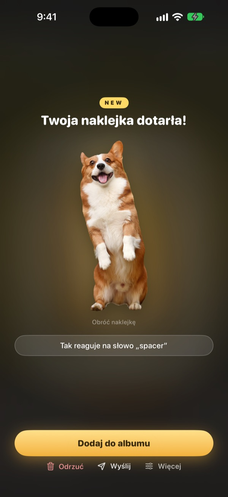
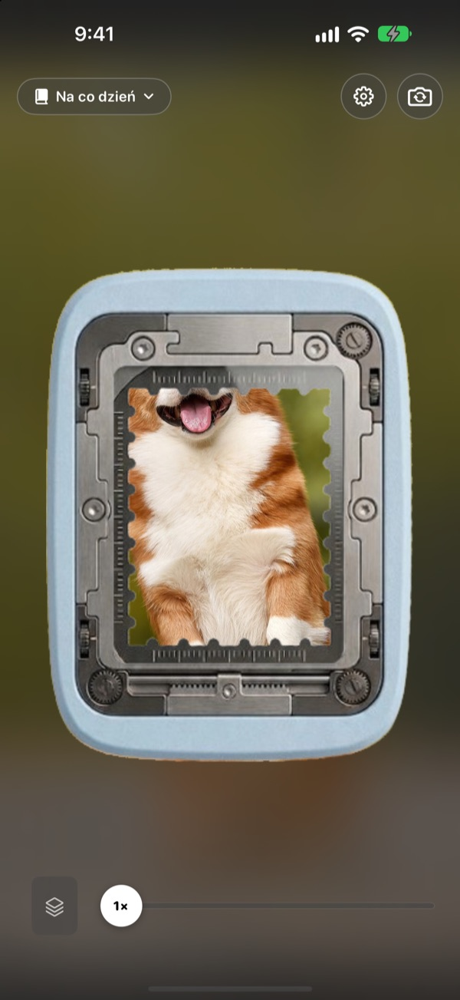
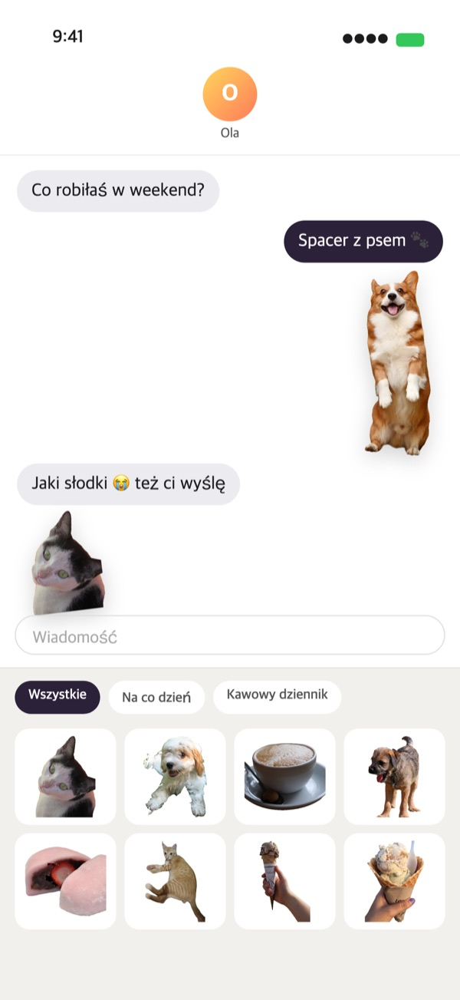
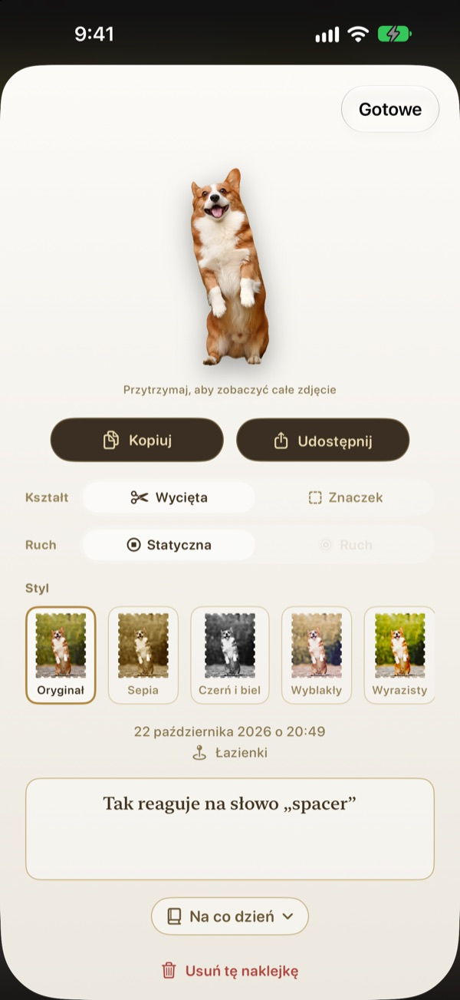
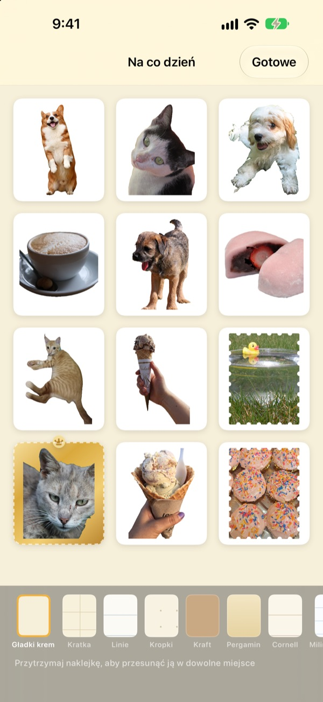

Przytrzymaj.
Ta chwila to już naklejka.
Ustaw kadr w okienku dziurkacza, przytrzymaj i puść. Pies zostaje wycięty dokładnie po swoim konturze, razem z krótkim ruchem sprzed naciśnięcia i po nim. Gotową naklejkę od razu wyślesz w Wiadomościach albo z klawiatury.
Wszystkie funkcje są bezpłatne. Naklejki i zdjęcia zostają na Twoim urządzeniu.

Oderwij naklejkę na próbę
Wybierz scenę, przytrzymaj przycisk dziurkacza i puść. Potem zmień kształt i styl.
Najfajniejsze chwile zasypiają w galerii
Łapiesz moment, gdy pies wystawia język. Ale żeby zrobić z tego naklejkę, trzeba znaleźć zdjęcie, wyciąć je i otworzyć jeszcze jedną aplikację do naklejek. W tym czasie rozmowa dawno zeszła na inny temat. Punching odrywa naklejkę od razu, tam gdzie robisz zdjęcie, a gdy tylko dodasz ją do albumu, czeka w szufladzie naklejek w Wiadomościach.
Obiekt wycięty, krajobraz jako znaczek
Gdy jest co wyciąć, na przykład osobę, zwierzaka albo przedmiot, dostajesz tylko to. Gdy nie ma, jak w krajobrazie, kadr odrywa się jako znaczek z ząbkowanym brzegiem.
Razem z naklejką zapisuje się krótki ruch sprzed naciśnięcia i po nim, więc naklejka się rusza.

Prosto do Wiadomości i na klawiaturę
Oderwane naklejki pojawiają się w szufladzie naklejek w Wiadomościach. Po włączeniu klawiatury Punching wybierzesz je i wkleisz także w innych aplikacjach.
Ruchome naklejki docierają w ruchu. Przytrzymaj naklejkę, żeby ją skopiować, i wklej, gdzie chcesz.

Kształt i styl także po fakcie
Przełączaj między wyciętym kształtem a znaczkiem, między ruchem a stopklatką, kiedy tylko chcesz. Oryginalne zdjęcie zostaje zachowane, więc obraz jest tak samo ostry jak za pierwszym razem, niezależnie od liczby zmian.
Wybierz styl: Oryginał, Sepia, Czerń i biel, Wyblakły, Wyrazisty lub Cyjan, i dopisz kilka słów, datę oraz miejsce.

Zbieraj w albumach, drukuj na papierze
Załóż album na każdy temat, a w Wiadomościach i na klawiaturze też wybierzesz naklejki album po albumie. Wybierz strony, np. kraft, kratkę, linie lub pergamin, i ułóż naklejki w dowolnej kolejności.
Zamień album w plik PDF do druku z liniami cięcia w kształcie znaczka i wydrukuj go prosto na papierze do naklejek.

Trzy kroki na start
- 1
Wyceluj
Umieść to, co chcesz uchwycić, w okienku na środku aparatu.
- 2
Przytrzymaj i puść
Naklejka odrywa się w chwili, gdy puszczasz.
- 3
Zapisz i wyślij
Dodaj ją do albumu, a od razu pojawi się w Wiadomościach i na klawiaturze.
Gdzie używać i gdzie zmieniać
- Wiadomości
- ＋ obok pola wiadomości ▸ Naklejki ▸ Naklejki Punching
- Inne aplikacje
- Włącz klawiaturę Punching, przełącz na nią klawiszem globusa, wybierz i wklej
- Wszędzie
- Przytrzymaj naklejkę, skopiuj ją i wklej
- Papierowe naklejki
- ⋯ w albumie ▸ Użyj ▸ Arkusz naklejek do druku (PDF)
- Strony i kolejność
- ⋯ w albumie ▸ Dekoruj dowolnie
- Starsze zdjęcia
- Importuj ze Zdjęć w albumie
- Kształt na start
- Ustawienia ▸ Odrywanie ▸ Domyślny kształt
- Odtwarzanie ruchu
- Ustawienia ▸ Widok ▸ Automatyczne odtwarzanie ruchu
- Szybkie otwieranie
- Otwórz aparat Punching w Skrótach lub Centrum sterowania
Ustawienia otworzysz kółkiem zębatym w prawym górnym rogu ekranu aparatu.
Najczęstsze pytania
Moja naklejka się nie rusza.
W prawym górnym rogu aparatu otwórz Ustawienia ▸ Widok i sprawdź, czy włączone jest Automatyczne odtwarzanie ruchu. Potem dotknij naklejki i sprawdź, czy pod opcją Kształt włączony jest Ruch. Ruch zapisuje się zawsze, więc możesz go włączyć w każdej chwili. Zdjęcia zaimportowane z aplikacji Zdjęcia to pojedyncze kadry, dlatego się nie ruszają.
Zamiast wyciętej naklejki dostaję znaczek.
Kadry, w których nie ma czego wyciąć, na przykład krajobrazy, automatycznie odrywają się jako znaczek. Dotknij naklejki, aby w każdej chwili zmienić to w opcji Kształt. Jeśli chcesz od początku dostawać znaczki, zmień Ustawienia ▸ Odrywanie ▸ Domyślny kształt.
Nie widzę naklejek w Wiadomościach.
W Wiadomościach dotknij ＋ obok pola wiadomości ▸ Naklejki i znajdź Naklejki Punching. Pojawiają się po oderwaniu w Punching co najmniej jednej naklejki, a jeśli masz kilka albumów, możesz je przeglądać album po albumie. Szczegółowe kroki znajdziesz w Ustawienia ▸ Użyj ▸ Użycie w Wiadomościach i na klawiaturze.
Jak włączyć klawiaturę?
W Ustawienia ▸ Użyj ▸ Użycie w Wiadomościach i na klawiaturze dotknij Otwórz Ustawienia i włącz Klawiatury ▸ Naklejki Punching. Wklejanie naklejek wymaga opcji Pozwól na pełny dostęp, ale klawiatura nigdy nie odczytuje ani nie wysyła tego, co wpisujesz, i nie łączy się z internetem. Potem w dowolnej aplikacji dotknij klawisza globusa, aby przełączyć się na Naklejki Punching.
Czy mogę wydrukować prawdziwe naklejki?
W albumie dotknij ⋯ w prawym górnym rogu ▸ Użyj ▸ Arkusz naklejek do druku (PDF). Dla całego albumu powstanie plik PDF do druku w 300 dpi z liniami cięcia w kształcie znaczków, gotowy na papier do naklejek w domowej drukarce albo do drukarni. Krok po kroku przeprowadzi Cię Poradnik drukowania w tym samym menu.
Gdzie podziały się moje dawne kolekcje?
Od wersji 1.0.1 naklejki grupuje się tylko w jeden sposób: w albumy. Każda kolekcja stała się albumem o tej samej nazwie, a jej naklejki, strony i kolejność zostały przeniesione bez zmian.
Na pasku stanu świeci zielone światełko.
To wskaźnik użycia aparatu w iOS. Świeci tylko wtedy, gdy widoczny jest ekran aparatu. Po otwarciu albumu aparat się zatrzymuje, a światełko gaśnie.
Co się stanie, gdy usunę naklejkę?
Naklejka, oryginalne zdjęcie i dane ruchu zostaną trwale usunięte z urządzenia i znikną też z szuflady naklejek w Wiadomościach. Nie da się ich przywrócić, więc usuwaj z rozwagą.
Gdzie zapisują się moje zdjęcia i naklejki?
Wyłącznie na Twoim urządzeniu. Nie ma konta, własnego serwera ani reklam. Na zewnątrz trafiają tylko anonimowe statystyki użycia, raporty błędów i opinie, które wyślesz samodzielnie. Szczegóły znajdziesz w polityce prywatności.
Czy to naprawdę za darmo?
Tak, wszystkie funkcje są bezpłatne. Jeśli aplikacja Ci się podoba, możesz zostawić w niej twórcy napiwek, ale napiwek niczego nie odblokowuje.
Pytania lub uwagi? Napisz na leeo@kakao.com. Zwykle odpowiadamy w ciągu 2–3 dni. Błędy i pomysły na funkcje możesz też zgłaszać na GitHubie: M1zz/StampCamera.